Crackmes.one CTF :: httpd
Created at: 27/02/2026, 16:41:48.: #reverse engineering, #ctf writeups :.
#no_ai
Table of Contents
| Challenge Author | crudd |
|---|---|
| Challenge Difficulty | Intermediate |
| Writeup Author | r4sti |
| Date | 26th February 2026 |
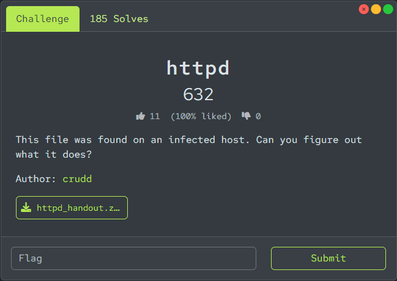
Synopsis
httpd was rated as an intermediate challenge in which the players had to reverse engineer a statically linked Golang binary that initially looked like a benign HTTP server. Digging deeper, players would figure out that the program sets up a packet sniffer and captured ICMP packets sent at the re0 device. The goal is to craft a custom ICMP packet based on the checks found at the binary. After sending the correct packet, the flag would be printed on the screen. Apart from this method, in this writeup, I also showcase a fully static solution that didn’t involve running the binary at all.
Early Analysis
The zip handout contains two files; httpd and README.md. Let’s unzip it and start by reading the contents of the README file …
This file was found on an infected host. Can you figure out what it does?
… which is basically the challenge’s description. The fact that the file was found at an infected host might be interesting later so let’s just keep it in mind for now.
But what kind of file is it? We can find out by running the Linux file command:
$ file httpd
httpd: ELF 64-bit LSB executable, x86-64, version 1 (FreeBSD), dynamically linked, interpreter /libexec/ld-elf.so.1, for FreeBSD 14.3, FreeBSD-style, Go BuildID=qFhGj9dLilyvUQG0jioV/pdT2CXTFFROnGyFt_iWG/4oSXKlJuQ2v7ZdSaKAaG/1odovLc3PIPvXv8LHbgL, with debug_info, not stripped
We get quite a few important information:
- We are dealing with a 64-bit executable compiled for x86-64 architecture
- It’s compiled to run in FreeBSD 14.3 using the interpreter
/libexec/ld-elf.so.1 - It’s written in Golang. You will see yourself that Golang decompilation looks really different than C/C++ and modern decompilers are still constantly improving in transpiling Golang code to C/C++ pseudocode.
- Symbols are not stripped (thankfully!). Dealing with stripped Golang binaries is a nightmare so the author was quite helpful here.
Before jumping into the challenge, let’s try running it first on an Ubuntu WSL2 (and see the error).
$ ./httpd
-bash: ./httpd: cannot execute: required file not found
This is no surprise. We know the binary can only be run under FreeBSD 14.3.
Static Analysis with Binary Ninja
Main function analysis
It’s a large binary so patience is key :-) (especially if your pc is an oldie, like mine)
After analysis is finished, we get a gigantic list of ~3000 functions but almost all of them belong to libraries so we won’t need to analyze them at all. Let’s jump to the program’s main logic. We can filter out just the main-related functions. The functions of interest are shown below.
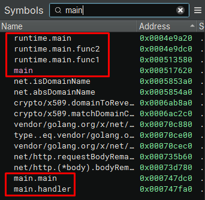
In Golang, the main function is main.main so that would be a good start.
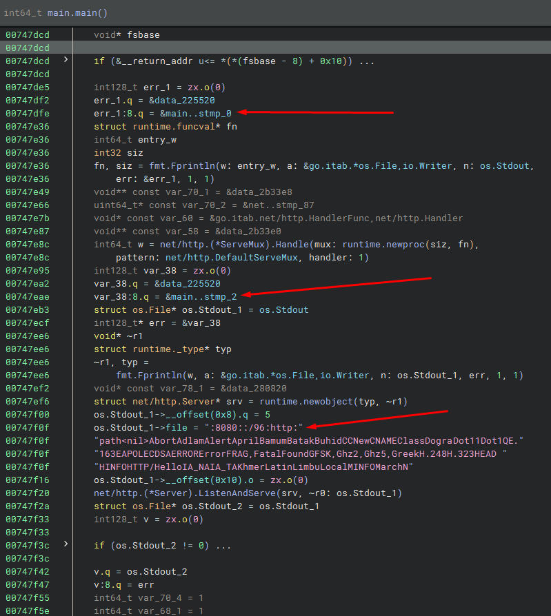
At first glance, the main function prepares the environment to setup an HTTP server locally, at port 8080.
Moreover, there are two Fprintln calls but it’s not clear what the messages are. This is due to how Golang strings work under the hood. More specifically, strings are not null-terminated so decompilers don’t know where to define the string. A Golang string is a struct object that contains both the string length and the string contents.
The string defined at 0x747f00 is an example of a Golang string of length 5. However, its initialization looks like a big string but this is a decompilation issue. In reality, os_Stdout_1 is just the first 5 bytes of this string; that is :8080.
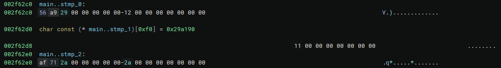
main__stmp_0 is 16-bytes long. The first 8 bytes store a pointer to the address 0x29a956 and the last 8 are the string length (in bytes). We right-click to the bytes 56 and af respectively and press O to define a pointer at this place.
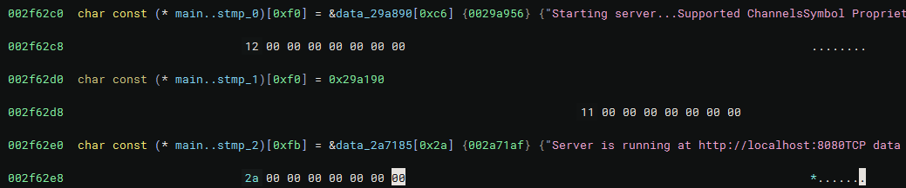
Now main__stmp_0 and main__stmp_2 point to a large string buffer but we know that their lengths are 0x12 and 0x2a respectively. This yields:
main__stmp_0:Starting server...main__stmp_2:Server is running at http://localhost:8080
Back to main, the only two things that stand out are the addresses 0x747e49 to 0x747e95.
void** const var_70_1 = &data_2b33e8;
uint64_t* const var_70_2 = &net..stmp_87;
void* const var_60 = &go.itab.net/http.HandlerFunc,net/http.Handler;
void** const var_58 = &data_2b33e0;
int64_t w = net/http.(*ServeMux).Handle(runtime.newproc(siz, fn), net/http.DefaultServeMux, 1);
runtime.newproc(function) creates a new goroutine; this is equivalent to go function() in Golang syntax.
Let’s get into the rabbit-hole for a while.
Analyzing the HTTP handler function (Rabbit-hole)
From the docs and by inspecting the assembly, we deduce that Handle() registers a handler function for requests to the HTTP server at the root endpoint /. data_2b33e0 is a pointer to the function main.handler which is shown below:
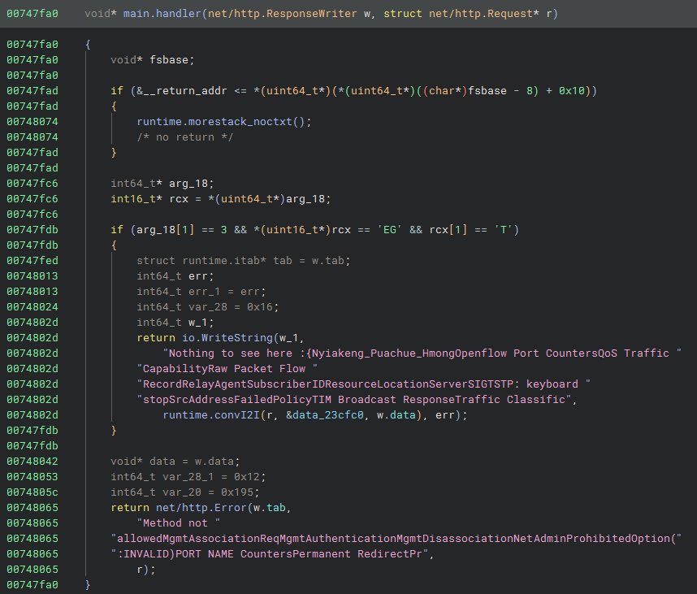
We quickly notice that this function is a rabbit-hole. Even though the HTTP server accepts only GET requests, it responds with Nothing to see here :{ when a GET request is done.
Analyzing the mysterious goroutine
data_2B33E8 is a pointer to net/http.init() which contains the actual function body.
DISCLAIMER: I always repeat that to myself but somehow I always forget it: Don’t trust the decompilation, double-check with the corresponding assembly.
Function assembly graph:
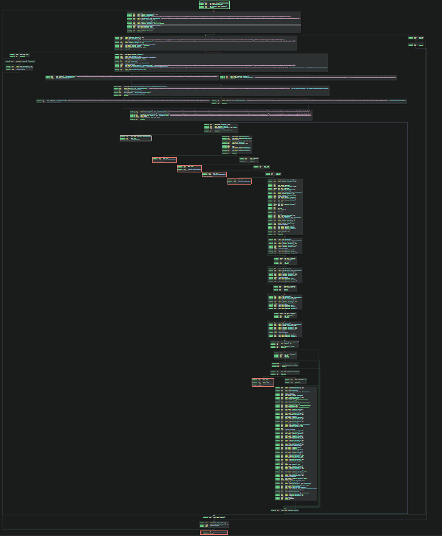
Function decompilation:
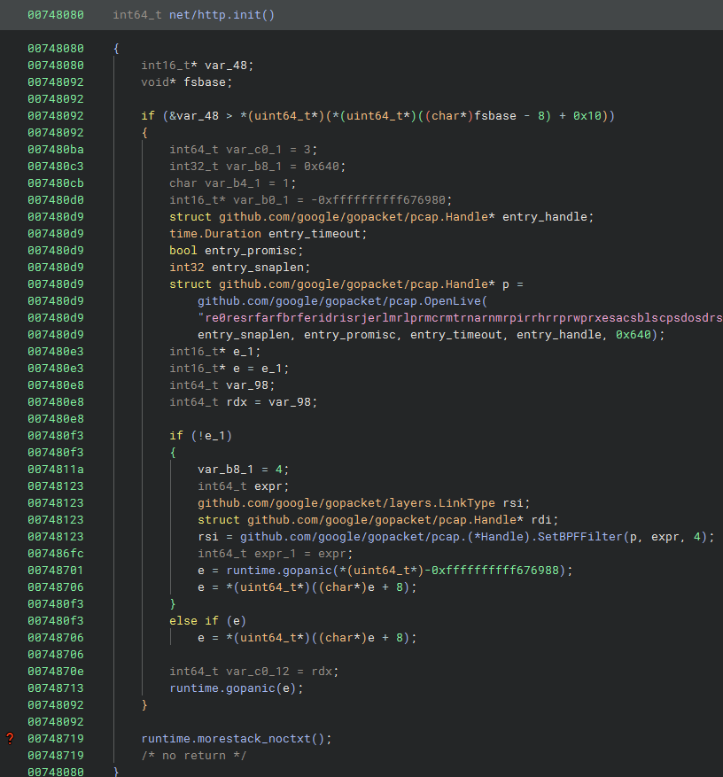
Do you notice something odd? The decompilation and graph layouts are totally off. It’s obvious that the decompilation doesn’t show all the function’s code and this must be an anti-decompilation technique (or just … Golang moment).
From what we are able to see, this function does the following:
-
OpenLiveopens the devicere0to read packets in promiscuous mode of size at most 1600 bytes long. However, the timeout is set to a weird value0FFFFFFFFFF676980which apparently is the cause of this decompilation corruption. -
Having setup the handle to the device, it calls
SetBPFFilterto captureicmppackets. Based on the docs:SetBPFFilter compiles and sets a BPF filter for the pcap handle.
The filter format is identical to that of tcpdump.
Unfortunately, after this call, decompilation breaks. We could go ahead patching some instructions out to clear the decompilation but I think it makes the challenge significantly more difficult and that’s not intended … and this is exactly what we are going to do. It turns out that the initialization int16_t* var_b0_1 = -0xffffffffff676980; at address 0x7480d0 is what breaks the decompilation so let’s right-click on the constant and select Patch > Convert to NOP.
It looks like I underestimated the power of Binary Ninja because this magic patch decompiled the rest of the function without an issue. Of course the code isn’t 100% accurate but this is way more convenient to work with rather than plain assembly (as I did while solving the challenge🙂).
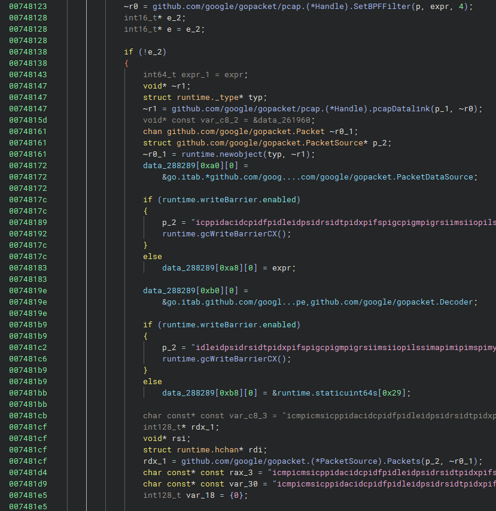
This code basically sets up an ICMP packet sniffer and prepares the program to receive packets and do something with them.
- A new packet source object is created to read data from
re0. Check the docs for a very similar use case. - Before calling
packetSource.Packets(), there is a reference to a packetDecoderwhich looks interesting. Looking at the docs, we start to suspect that a custom packet decoder is implemented and we need to find out how to send the correct packets.
After calling Packets() there is an infinite loop that starts the listener and calls chanrecv to capture packets. We can see the following checks:
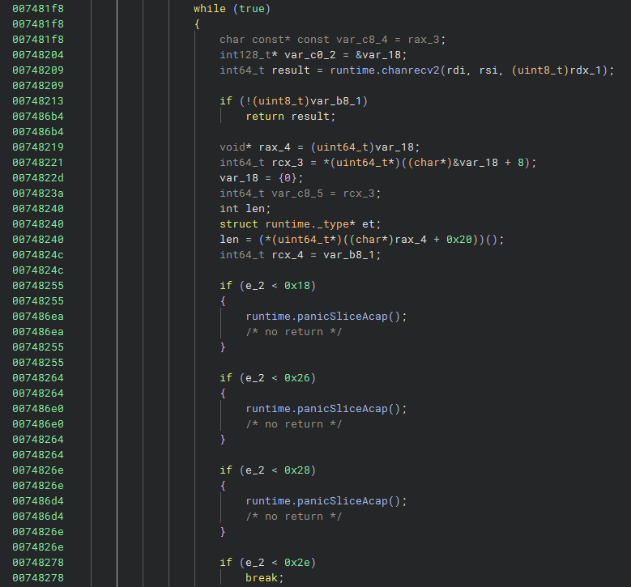
e_2 is a variable that holds a value that is compared to a few integers. Let’s denote e_2 as $e_2$ because we love maths. From these checks, we deduce that:
-
If $e_2 < 40$, an exception is thrown which most likely means that the received packet is invalid.
-
If $40 < e_2 < 46$, code breaks out of the loop and the listener is terminated.
-
If $e_2 >= 46$, code proceeds to further packet decoding.
But what is the value of e_2? Why is $46$ the minimum valid length?
From a quick research using any search engine, we find the following:
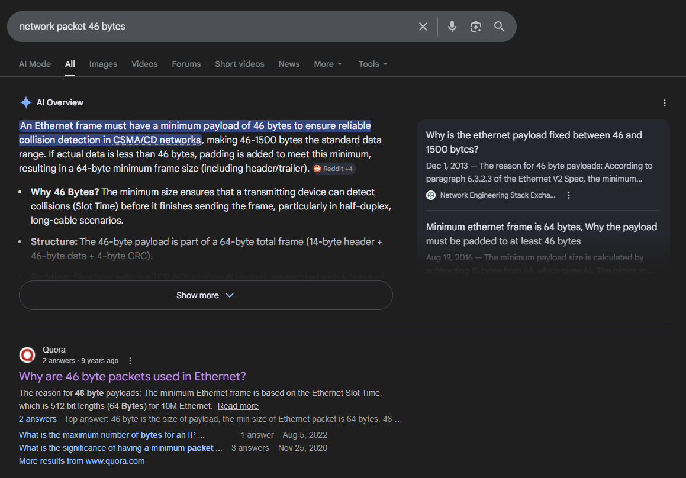
It looks like a valid Ethernet frame requires a minimum payload of 46 bytes. Consider the Ethernet frame as the outer peel of any network packet (TCP/UDP/HTTP/IP/ICMP and so on) out there. It encapsulates the entire packet, just like the outer onion peel encapsulates the inner ones.
Packet = Ethernet Frame = Ethernet Header + Ethernet Payload = Ethernet Header + (IPv4 Packet) = Ethernet Header + (IPv4 Header + IPv4 Payload) = Ethernet Header + (IPv4 Header + ICMP packet).
ICMP Packet Format
Let’s analyze a dummy ICMP packet captured in Wireshark. I pinged 8.8.8.8 and got the following Ethernet frame in hex:
0000 a0 95 7f 4e 25 50 08 60 6e d5 8b 18 08 00 45 00
0010 00 3c 54 5a 00 00 80 01 00 00 c0 a8 01 02 08 08
0020 08 08 08 00 4d 5a 00 01 00 01 61 62 63 64 65 66
0030 67 68 69 6a 6b 6c 6d 6e 6f 70 71 72 73 74 75 76
0040 77 61 62 63 64 65 66 67 68 69
The IPv4 header starts at the offset 0x0e and is 20 bytes long.
45 00 00 3c 54 5a 00 00 80 01 00 00 c0 a8 01 02
08 08 08 08
The IPv4 payload, which is also the ICMP packet, starts at the offset 0x22 and is 40 bytes long.
08 00 4d 5a 00 01 00 01 61 62 63 64 65 66 67 68
69 6a 6b 6c 6d 6e 6f 70 71 72 73 74 75 76 77 61
62 63 64 65 66 67 68 69
This is the layout of an ICMP packet:
| 8 bits | 8 bits | 16 bits |
0 1 2 3 4 5 6 7 0 1 2 3 4 5 6 7 0 1 2 3 4 5 6 7 0 1 2 3 4 5 6 7
+-+-+-+-+-+-+-+-+-+-+-+-+-+-+-+-+-+-+-+-+-+-+-+-+-+-+-+-+-+-+-+-+
| Type | Code | Checksum |
+-+-+-+-+-+-+-+-+-+-+-+-+-+-+-+-+-+-+-+-+-+-+-+-+-+-+-+-+-+-+-+-+
| Identifier | Sequence Number |
+-+-+-+-+-+-+-+-+-+-+-+-+-+-+-+-+-+-+-+-+-+-+-+-+-+-+-+-+-+-+-+-+
| Payload |
+-+-+-+-+-+-+-+-+-+-+-+-+-+-+-+-+-+-+-+-+-+-+-+-+-+-+-+-+-+-+-+-+
Inspired by: https://datatracker.ietf.org/doc/html/rfc792 (Page 14)
It turns out that this image contains more than enough information required for solving this challenge.
We are particularly interested in the ICMP packet format so let’s dive into it:
The Type field
Type is an 8-bit field and the leading byte of an ICMP packet. The ping command, with which we usually send ICMP packets, uses two message types; Echo Request and Echo Reply with identifiers 08 and 00 respectively. For more info, check Page 14 of the official RFC.
In the dummy packet above, the type is 08 which corresponds to Echo Request. If we inspected the corresponding reply message, the type would be 00; for Echo Reply.
In this challenge, we are interested in types 00 and 08.
The Code field
Directly related to the type field. Check here the complete list of all the possible Code values. We are again interested in the values 00 and 08.
The ICMP Checksum field
The Type, Code, Identifier, Sequence Number and Payload fields are merged and hashed to a 16-bit checksum. You can find an implementation of the checksum algorithm here. This can be transpiled to Python as follows:
def icmp_checksum(data: bytes) -> int:
if len(data) % 2:
data += b"\x00"
s = 0
for i in range(0, len(data), 2):
word = (data[i] << 8) + data[i+1]
s += word
s = (s & 0xffff) + (s >> 16)
return (~s) & 0xffff
The Identifier and Sequence Number fields
Based on the official docs of the ICMP protocol, for code = 0, which is the value of interest, these fields are initialized either to 0 or 1.
The Payload field
As the name implies, this field contains the actual echo message body that is sent to the receiver.
For example, in the dummy packet above:
- Type :
0x08 - Code :
0x00 - Checksum :
0x4d5a - Identifier :
0x01 - Sequence number :
0x01 - Payload :
abcdefghijklmnopqrstuvwabcdefghi
Analyzing the custom ICMP packet decoder
Let’s dive into the code after the length checks.
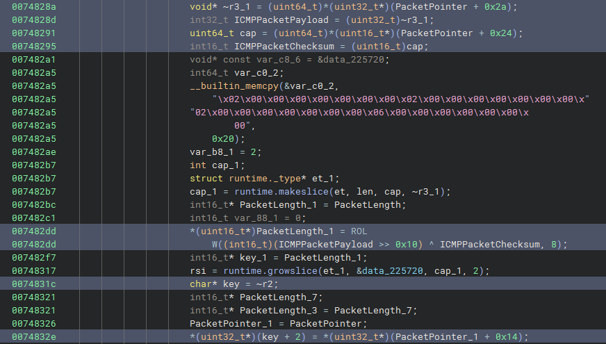
Looking at the highlighted lines above, there is a promising key array variable being assigned some values based on the captured packet bytes. This is eventually used to decrypt the flag with AES-256 CBC.
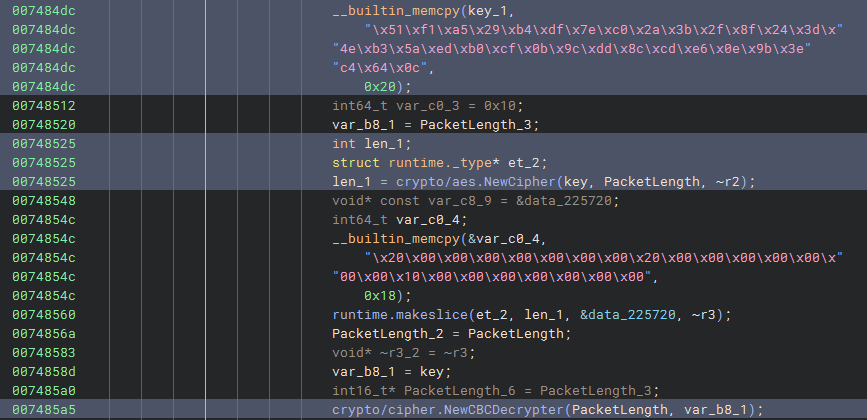
Therefore, with some further code auditing and cross verifications, we should be able to understand that the goal is to figure out the AES key and IV to decrypt the flag. The encrypted flag is written at instruction 0x7484dc:
51F1A529B4DF7EC02A3B2F8F243D4EB35AEDB0CF0B9CDD8CCDE60E9B3EC4640C
I know you might hate maths but notation can be really helpful. Let’s denote the 16-byte key as $K$, such that $K = k_0k_1 \cdots k_{15}$, where $k_i$ is the $i$-th key byte.
Demystifying $k_0, k_1$
Back to our analysis, why did I rename the two variables to ICMPPacketPayload and ICMPPacketChecksum?
Looking at lines 0x74828a and 0x748291, the packet offsets 0x2a and 0x24 are accessed respectively. Looking at our full dummy packet above, we deduce that:
0x2acorresponds to the start of the ICMP packet payload and0x24corresponds to the ICMP packet checksum
At line 0x74831c, the decompilation is misleading. Looking at the corresponding assembly, we see:
007482cc 89ca mov edx, ecx
007482ce c1e910 shr ecx, 0x10
007482d1 0fb75c2442 movzx ebx, word [rsp+0x42 {ICMPPacketChecksum}]
007482d6 31d9 xor ecx, ebx
007482d8 90 nop
007482d9 66c1c108 rol cx, 0x8
007482dd 668908 mov word [rax], cx
We notice (and by debugging too) that the result after ROLW is written directly to [rax] and no NOT operation is involved. To be fair, it’s not totally irrelevant - remember that the original ICMP checksum calculation algorithm involves a NOT operation in the end so this must be the confusion? I am not sure…
Anyways, we now know that $k_0k_1 = \text{cx}$, where $k_0k_1 \cdots k_{15}$ the 16 key bytes. The value of cx depends on the checksum and the payload so more on that, later.
Demystifying $k_2, k_3, k_4, k_5$
At line 0x74832e, four bytes from the packet are accessed, starting from the offset 0x14. By looking at the documentation of the IPv4 header, we learn that:
- Offsets
0x14,0x15: IPv4 flags - Offset
0x16: IPv4 TTL (Time to Live) value - Offset
0x17: Current packet protocol
This is where I believe that additional constraints should be provided so that we didn’t have to “guess” the TTL value and the flags. From the Time To Live Wikipedia article and the official List of IP protocol numbers, we deduce that:
- For Linux machines, default TTL value is 64 (
0x40) - The protocol number for ICMP packets is
1.
Therefore, it’s safe to assume that $k_4 = \text{0x40}$ and $k_5 = \text{0x01}$.
More on $k_2, k_3$ and the flags later…😭
Demystifying $k_6, k_7$
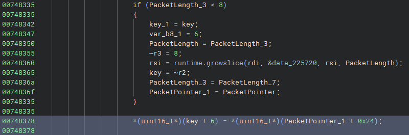
As mentioned above, packet offset 0x24 corresponds to the ICMP packet checksum, therefore $k_6k_7 = \text{checksum}$.
Demystifying $k_8, k_9, k_{10}, k_{11}$
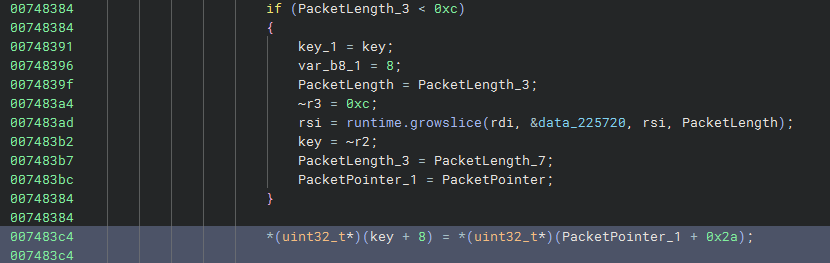
As mentioned above, packet offset 0x2a corresponds to the ICMP packet payload, therefore $k_8k_9k_{10}k_{11} = \text{payload}$.
Demystifying $k_{12}, k_{13}$
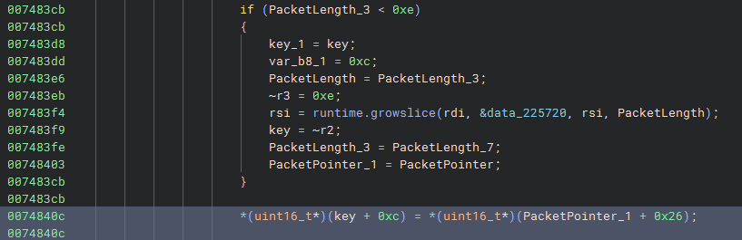
Looking at the dummy packet above, offset 0x26 corresponds to the 16-bit Identifier field of the ICMP packet, therefore $k_{12}k_{13} = \text{identifier}$.
Demystifying $k_{14}, k_{15}$
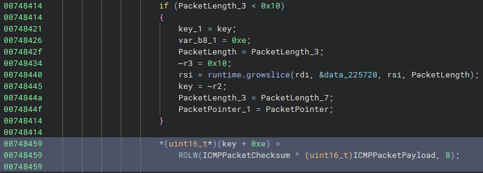
Notice that $k_{14}, k_{15}$ are computed very similarly to $k_0, k_1$. These depend to the ICMP checksum and the ICMP payload.
Constructing the AES key
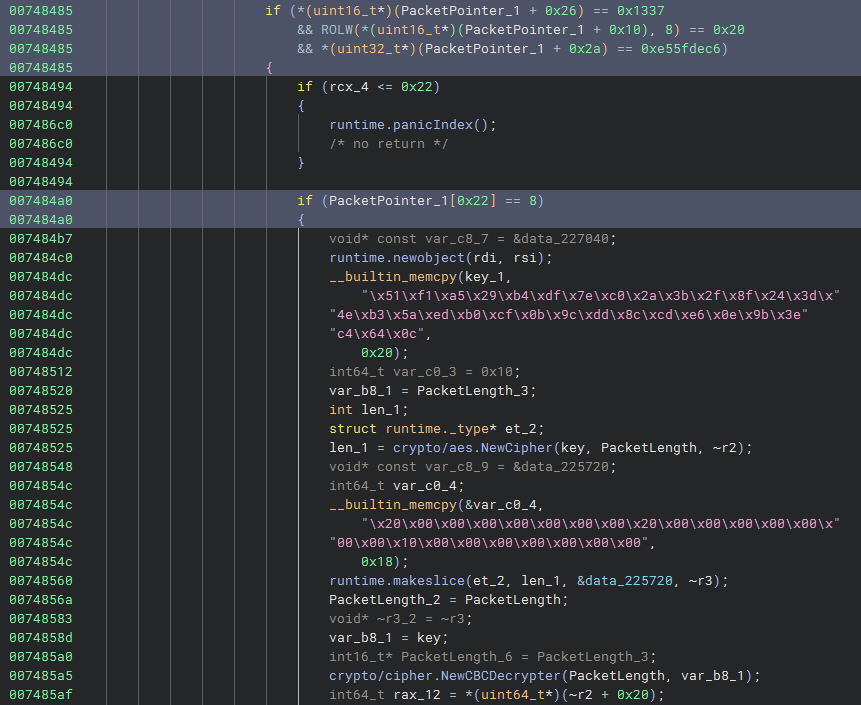
After setting all the bytes of the AES key, there are some final checks and then the flag is decrypted and echoed as the reply message.
- The packet offset 0x26 (which is the ICMP packet identifier) must be equal to
0x1337 - The packet offset 0x10 when rotated left by 8 bits must be equal to
0x20. The offset 0x10 belongs to the IPv4 header and specifies the total length of the IPv4 packet (IPv4 Header + ICMP packet). For our case, the total length should be0x20bytes. - The packet offset 0x2a (which is the ICMP packet payload) must be equal to
0xe55fdec6 - The packet offset 0x22 (which is the ICMP packet type field) must be equal to
0x08
Let’s use these constraints to solve for the unknown variables $k_i$. Keep in mind that we need to be careful with the endianess, we can verify our results by debugging the binary in a FreeBSD virtual machine.
We will define the key as a 16-byte array initialized to the byte X.
K = [ord("X") for _ in range(16)]
We compute $k_{12}, k_{13}$:
>>> K[12:14] = b"\x37\x13"
>>> bytes(K)
b'XXXXXXXXXXXX7\x13XX'
We compute $k_8, k_9, k_{10}, k_{11}$:
>>> import struct
>>> PAYLOAD = struct.pack("<I", 0xE55FDEC6) # little endian
>>> K[8:12] = PAYLOAD
>>> bytes(K)
b'XXXXXXXX\xc6\xde_\xe57\x13XX'
We compute $k_4, k_5$:
>>> K[4:6] = b"\x40\x01"
>>> bytes(K)
b'XXXX@\x01XX\xc6\xde_\xe57\x13XX'
For the sake of computing $k_0, k_1, k_{14}, k_{15}, k_6, k_7$, we will represent the checksum in big endian. Currently, the value of checksum is unknown so let’s initialize it to something like 0xdead.
>>> chksum = 0xdead
>>> K[0:2] = int.to_bytes(chksum ^ 0xe55f, length=2, byteorder="big")
>>> K[14:] = int.to_bytes(chksum ^ 0xdec6, length=2, byteorder="big")
>>> K[6:8] = struct.pack("<H", chksum)
Even though the value of the checksum is unknown, we know it depends on the ICMP fields:
- Type
- Code
- Identifier
- Sequence number
- Payload
The only fields for which we don’t have constraints are Code and the Sequence number. However, documentation (and LLMs) say that usually code = 0 and sequence number is either 0 or 1, therefore, we get two different checksum values for each pair. Let’s write a function that crafts an ICMP packet header:
def build_icmp_header(typ, code, identifier, sequence_number):
# replace checksum with 0x0000
return struct.pack("!BBHHH", typ, code, 0x00, identifier, sequence_number)
Now let’s compute the two checksum candidates:
>>> hex(icmp_checksum(build_icmp_header(0x08, 0x00, 0x3713, 0x00) + PAYLOAD))
'0x9a28'
>>> hex(icmp_checksum(build_icmp_header(0x08, 0x00, 0x3713, 0x01) + PAYLOAD))
'0x9a27'
DISCLAIMER: I was NOT THAT sane and methodical while solving the challenge. My solution was chaotic and involved a lot of bruteforcing due to heavy desperation. For example, the entire time I thought the sequence number is just 0 based on the RFC, but it turns out the expected sequence number was 1.
Just like that, by substituting these two checksums, we get two candidate AES keys:
>>> chksum = 0x9a28
>>> # represent in little endian (see assembly above)
>>> K[0:2] = int.to_bytes(chksum ^ 0x5fe5, length=2, byteorder="little")
>>> K[14:] = int.to_bytes(chksum ^ 0xc6de, length=2, byteorder="little")
>>> K[6:8] = struct.pack(">H", chksum) # checksum is appended in big endian
>>> bytes(K)
b'\xcd\xc5XX@\x01\x9a(\xc6\xde_\xe57\x13\xf6\\'
and
>>> chksum = 0x9a27
>>> K[0:2] = int.to_bytes(chksum ^ 0x5fe5, length=2, byteorder="little")
>>> K[14:] = int.to_bytes(chksum ^ 0xc6de, length=2, byteorder="little")
>>> K[6:8] = struct.pack(">H", chksum)
>>> bytes(K)
b"\xc2\xc5XX@\x01\x9a'\xc6\xde_\xe57\x13\xf9\\"
Now we are left with the IPv4 flags🙂.
Figuring out the right IPv4 flags
There are three IPv4 flags in total:
- Reserved bit (Always 0)
- Don’t fragment flag (DF)
- More Fragments flag (MF)
In case the MF flag is set, there is also the 8-bit field that is set; namely Fragment Offset. Since the reserved bit is always 0, we are left with the following flag choices:
- 000
- 010 (DF set)
- 001 (MF set)
I think the author here correctly assumed that IF the MF bit was set, this would require us having to guess the correct fragment offset and given that this would downgrade challenge’s quality, we can safely rule this out (I can do it now, at the time of writeup, but wasn’t that easy during the CTF…).
We are left with two choices:
- 000 (0x00)
- 010 (0x02)
Let’s find the two possible 16-bit values for each candidate:
>>> int("000" + "0"*13, 2).to_bytes(length=2, byteorder="big").hex()
'0000'
>>> int("010" + "0"*13, 2).to_bytes(length=2, byteorder="big").hex()
'4000'
In other words, either:
- $k_2 = \text{0x00}$ and $k_3 = \text{0x00}$
or
- $k_2 = \text{0x40}$ and $k_3 = \text{0x00}$
We have everything we need to try all the possible AES keys and see which one results in the flag.
1. Fully Static Solution
The final thing to figure out before we get the flag is the AES Initialization Vector (IV). Looking at the docs of NewCBCDecrypter, we see that the second argument of the function is the IV.
Back to the decompilation, from line 0x7485a5, it’s clear that the IV is the same as the encryption key.
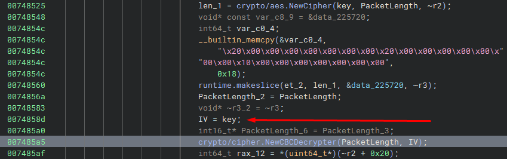
Here is a plug-n-play solver that outputs the flag instantly.
import struct
from Crypto.Cipher import AES
ENC_FLAG = bytes.fromhex("51F1A529B4DF7EC02A3B2F8F243D4EB35AEDB0CF0B9CDD8CCDE60E9B3EC4640C")
PAYLOAD = struct.pack("<I", 0xE55FDEC6)
def icmp_checksum(data: bytes) -> int:
if len(data) % 2:
data += b"\x00"
s = 0
for i in range(0, len(data), 2):
word = (data[i] << 8) + data[i+1]
s += word
s = (s & 0xffff) + (s >> 16)
return (~s) & 0xffff
def construct_key(flags, chksum):
K = [0 for _ in range(16)]
K[0:2] = int.to_bytes(chksum ^ 0x5fe5, length=2, byteorder="little") # first two bytes
K[2:4] = int.to_bytes(flags << 13, length=2, byteorder="big") # add flag
K[4:6] = b"\x40\x01" # add TTL and protocol
K[6:8] = struct.pack(">H", chksum) # add checksum
K[8:12] = PAYLOAD # add payload
K[12:14] = b"\x37\x13" # add identifier
K[14:] = int.to_bytes(chksum ^ 0xc6de, length=2, byteorder="little") # last two bytes
return bytes(K)
def build_icmp_header(typ, code, identifier, sequence_number):
# checksum is replaced by 0x0000 for checksum calculation
return struct.pack("!BBHHH", typ, code, 0x0000, identifier, sequence_number)
def fully_static_solution():
for flags in [0, 2]:
for code in [0, 8]:
for sequence_number in range(10):
icmp_header = build_icmp_header(0x08, code, 0x3713, sequence_number)
chksum = icmp_checksum(icmp_header + PAYLOAD)
KEY = construct_key(flags, chksum)
IV = KEY
cipher = AES.new(KEY, AES.MODE_CBC, IV)
dec = cipher.decrypt(ENC_FLAG)
if b"CMO{" in dec:
print(flags, code, sequence_number, hex(chksum), dec)
fully_static_solution()
Output:
2 0 1 0x9a27 b'CMO{fUn_w1th_m4g1c_p4ck3t5}\x05\x05\x05\x05\x05'
Not gonna lie, I was really tilted when I realized that I was using the wrong flag for about 5 hours straight but it somehow made sense when I thought about this after solving the challenge…
2. Solution with Scapy
Instead of doing all of this work manually, we can simply craft an ICMP packet from scratch and set each field accordingly so that the binary echoes the flag as the message.
We can use the following Python script to craft an ICMP packet:
from scapy.all import IP, ICMP, Raw, send
def send_packet(flags, seq):
SRC_IP = "192.168.1.2"
TARGET_IP = "192.168.1.218" # replace with your VM's ip
assert len(PAYLOAD) == 0x04
pkt = IP(src=SRC_IP, dst=TARGET_IP, flags=flags) / ICMP(type=0x08, id=0x3713, seq=seq) / Raw(load=PAYLOAD)
built = pkt.__class__(bytes(pkt))
print(f"[!] Sending to {TARGET_IP}...")
send(built, verbose=2)
print("[+] Sent. Check binary's stdout.")
BUT, to run this script, we need to run the binary which means we need to run FreeBSD in a virtual machine. You can download FreeBSD-14.3-RELEASE-amd64-disc1.iso from the official FreeBSD repository.
WARNING: There is no GUI, it’s all old-school hardcore CLI.🙂
Having logged in, it is most likely that you will get the following when trying to run the binary.
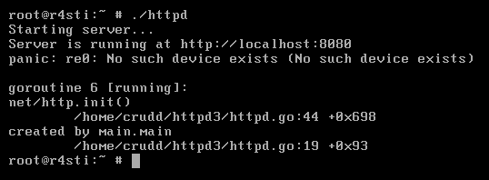
That’s because the sniffer captures packets in the re0 device. Our network is currently configured to support these two devices:
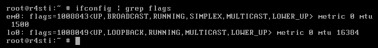
We can ghetto-bypass this by running ifconfig em0 name re0.
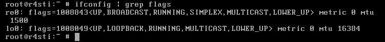
Now we can run the binary and the “HTTP server” starts running :-)
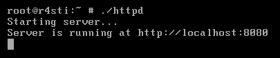
We can run the following from our host to verify that the server works fine:
C:\Users\r4sti>curl http://192.168.1.218:8080
Nothing to see here :{
Let’s write a function to send repeated packets until we hit the right flags and sequence number:
def scapy_packet_crafting_solution():
for flags in [0, 2]:
for sequence_number in range(5):
send_packet(flags, sequence_number)
scapy_packet_crafting_solution()
Output:
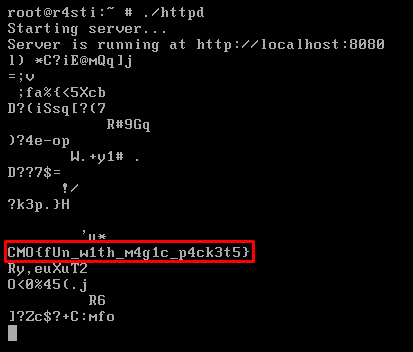
The secret ingredient
Even if I didn’t mention it at all, I spent a lot of hours debugging to validate whether my findings were correct. It turned out that I had everything correct apart from these ****** flags and sequence number fields that made me waste so much time to guess figure out. Behind each detailed writeup, there always exists a reverse engineer in pain that most likely, tried hundred more things while solving at real-time which unfortunately cannot be showcased in a single writeup. That would make it too hard to follow. Some things that I did but didn’t mention:
- Write a C program that bruteforces the TTL, the protocol, the flags and the checksum😓.
- Debug the program to validate my findings. This is due to me working entirely in assembly level as IDA decompilation was broken. It was until I started writing the writeup with Binja that I realized how easy it was to fix the decompilation. I believe seeing the decompilation for this function could eliminate the need of extensive debugger usage.
- Breakpoint at
movinstructions that constructed the AES key. This helped a lot, especially for $k_0,k_1,k_{14},k_{15}$. - Extensive use of LLM out of desperation to help me understand why my solution didn’t work. Iirc it suggested me setting all the possible flag bits since the first or two hours while solving, but I was pretty convinced that it was just hallucinating… Maybe I should blindly listen to it, but this suffering forced me to understand exactly how ICMP and IP packets are crafted.